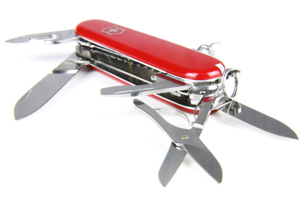

The Swiss Army Knife of Data Preprocessing: Unfolding the Layers of recipes package

Data preprocessing is the backstage work that seldom receives the limelight but ensures that the main act — machine learning models — shine. Think of it as tuning the instruments before an orchestra’s performance. Within the Tidymodels ecosystem, one package serves as the Swiss Army Knife for this critical process: recipes. Just as a Swiss Army Knife has a tool for every need, recipes offers a step for every preprocessing requirement you could imagine.
In this post, we will unfold the layers of this multipurpose package, exploring its functionalities and showing how it integrates seamlessly with other Tidymodels packages. Whether you’re a data analyst fine-tuning your methods or a data science veteran seeking a more efficient pipeline, this guide aims to equip you with the versatility that recipes brings to the table.
The Layers of recipes
Picture a Swiss Army Knife in your mind. Each component, whether a blade, screwdriver, or tweezer, serves a specific function. The recipes package mimics this multifaceted utility by offering a wide array of steps for data preprocessing. At the core, recipes revolves around three primary elements: steps, roles, and operations.
- Steps: These are the individual “tools” within the
recipespackage. Each step serves to perform a specific transformation on your data—be it normalization, encoding, or imputation. - Roles: Think of roles as the category labels for each “tool.” They define how a particular variable or feature should be treated during the preprocessing phase.
- Operations: This refers to executing the steps you’ve set up. Like a Swiss Army Knife that’s not useful until you actually employ its tools,
recipesdemands action to enact changes on your dataset.
In essence, recipes is your go-to toolkit for transforming raw data into a format optimized for machine learning. The package’s structure allows for straightforward, tidy, and replicable code—essential traits for any data scientist or analyst.
# A simple example of defining a recipe
library(recipes)
recipe <- recipe(Sale_Price ~ ., data = housing_data) %>%
step_center(all_numeric()) %>%
step_scale(all_numeric())Why recipes Stands Out
In the realm of R’s rich package ecosystem, recipes has carved its niche as the Swiss Army Knife of data preprocessing. So, what makes it stand out? The key lies in its compatibility and cohesion with the broader Tidymodels ecosystem.
Firstly, recipes embraces the Tidyverse philosophy, making it intuitive for anyone familiar with dplyr, ggplot2, or other Tidyverse packages. It incorporates the pipe operator (%>%), enabling smooth and readable workflows.
Secondly, recipes is not an isolated tool; it’s part of a larger toolkit. It works in harmony with other Tidymodels packages like parsnip, tune, and yardstick, allowing for a seamless data science pipeline from preprocessing to modeling and evaluation.
This integration enables recipes to not just be a jack of all trades but also a master of many, providing the versatility and power to handle a broad range of preprocessing tasks with ease.
Getting Started with recipes
Imagine you’ve just been gifted a Swiss Army Knife. It’s packed with functionalities, but how do you make the most of it? Similarly, recipes is loaded with preprocessing steps, but it comes to life when you start actually using them. To help you get your feet wet, let’s walk through a simple example using the well-known iris dataset.
Suppose you want to preprocess the iris dataset for machine learning, perhaps to predict species based on the other features. Here’s how you could use recipes to center and scale all numeric variables:
# Loading the recipes package
library(recipes)
# Creating a sample recipe for the iris dataset
recipe <- recipe(Species ~ ., data = iris) %>%
step_center(all_numeric(), -all_outcomes()) %>% # Centering all numeric variables except the outcome
step_scale(all_numeric(), -all_outcomes()) # Scaling all numeric variables except the outcome
# Preparing and baking the recipe
trained_recipe <- prep(recipe, training = iris)
processed_data <- bake(trained_recipe, new_data = iris)In this example, we first load the recipes package and then define our recipe. We use step_center and step_scale to center and scale all numeric variables, respectively. Finally, we “prepare” the recipe with prep and “bake” it with bake to get our processed data.
This code snippet showcases how recipes allows for a clean, straightforward, and highly readable workflow, making your data science code both effective and maintainable.
Deep Dive into Selected Tools
The Swiss Army Knife is celebrated not just for its multitude of tools, but for the specificity each one offers for different tasks. Likewise, the recipes package shines when we dig deep into the specialized steps it offers for various preprocessing needs.
- Data Imputation with
step_impute_median(): This step replaces missing values in your dataset with the median of the feature. For example, you could usestep_impute_median(all_numeric(), -all_outcomes())to impute all numeric variables, except the outcome. Other methods for imputation includestep_impute_knn()andstep_impute_mean(). - Encoding Categorical Variables with
step_dummy(): Converting categorical variables into a machine-usable format is seamless withstep_dummy(). You can encode all nominal variables except the outcome usingstep_dummy(all_nominal(), -all_outcomes()). If you’re looking for alternatives, considerstep_other()orstep_integer(). - Data Normalization with
step_normalize(): To normalize your data,step_normalize()scales all numeric features to have a mean of zero and standard deviation of one. Utilizestep_normalize(all_numeric(), -all_outcomes())to apply this step. Alternative methods for scaling includestep_center()andstep_scale(). - Text Preprocessing with
step_tokenize(): Breaking down text into smaller pieces or tokens becomes straightforward withstep_tokenize(text_column). If you’re dealing with text data, you could also look atstep_textfilter()orstep_tfidf()as alternative strategies. - Feature Engineering with
step_interact(): If you’re interested in creating new features based on interactions between existing ones,step_interact(~ var1 * var2)has got you covered. For more advanced feature engineering, you may considerstep_poly()orstep_ns(). - Outlier Detection with
step_novel(): Detecting outliers is another tool in the Swiss Army Knife ofrecipes. Usestep_novel(all_numeric())to flag unusual data points. For other outlier-handling techniques, check outstep_knnimpute()orstep_impute_bag(). - Box-Cox Transformation with
step_BoxCox(): Non-normal data can be transformed to approximate normality withstep_BoxCox(all_numeric(), -all_outcomes()). If Box-Cox doesn’t fit your needs, trystep_YeoJohnson()orstep_sqrt(). - PCA with
step_pca(): For reducing the dimensionality of your dataset while retaining essential information,step_pca(all_numeric())is highly effective. Other dimensionality reduction techniques includestep_ica()andstep_kpca(). - Data Binning with
step_bin2factor(): Sometimes, numeric precision is less important than categorical interpretation. To convert numerical variables into bins, usestep_bin2factor(numeric_column). Other options for binning data includestep_cut()andstep_nzv(). - Time-Series Preprocessing with
step_lag(): For time-series data, creating lagged variables can help account for temporal dependencies. Usestep_lag(time_series_column)to achieve this. If you’re looking for other ways to preprocess time-series data,step_diff()andstep_rollapply()are also available.
Each of these specific tools in recipes can be thought of as a unique attachment in your Swiss Army Knife, ready to tackle the challenges your dataset presents.
Real-world examples where recipes proves invaluable
The Swiss Army Knife isn’t just a novelty; it’s a trusted companion in various real-world scenarios. Similarly, the recipes package has proven itself invaluable in a number of real-world data science projects.
- Customer Segmentation: In marketing analytics,
recipescan be invaluable for preparing data for clustering algorithms. With its data normalization and dimensionality reduction steps, the package can help you identify distinct customer segments with precision. - Sentiment Analysis: When it comes to text data,
recipesoffers steps for text tokenization and TF-IDF calculation, providing the preprocessing needed for effective sentiment analysis. - Predictive Maintenance: In manufacturing, predictive maintenance is critical.
recipesexcels here, allowing for feature engineering that can highlight patterns and anomalies, thereby aiding in predictive modeling. - Fraud Detection: By using outlier detection methods and feature interactions,
recipeshelps in making your dataset robust enough to train machine learning models that can identify fraudulent transactions. - Time Series Forecasting: The time-series steps like
step_lag()orstep_diff()provide essential transformations for dealing with sequential data, makingrecipesa must-have tool in time-series analysis.
In the same way that a Swiss Army Knife becomes an extension of one’s hand, mastering recipes can make you a more effective and efficient data scientist or analyst. The package’s thoughtful design, flexibility, and robust set of tools empower you to handle almost any data preprocessing task with ease. Understanding the core principles and individual tools of recipes not only adds a powerful asset to your data science toolkit but also enriches your overall analytical capabilities.
Additional Resource
One of my favorite resources for diving deeper into the tidymodels framework is Julia Silge’s YouTube channel. Her tutorials are insightful, well-explained, and cover a range of topics within the tidymodels ecosystem. I highly recommend checking out her content to further enhance your data science skills. You can find her channel here.